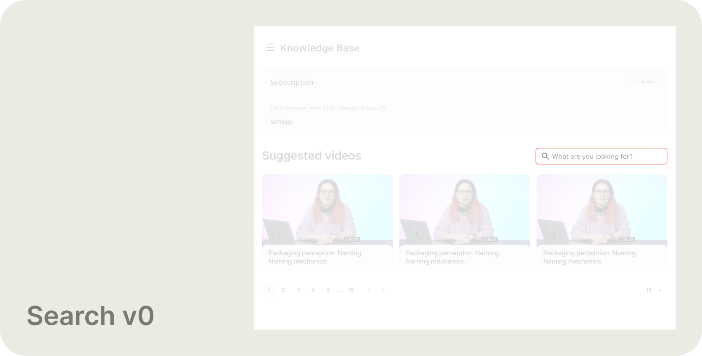
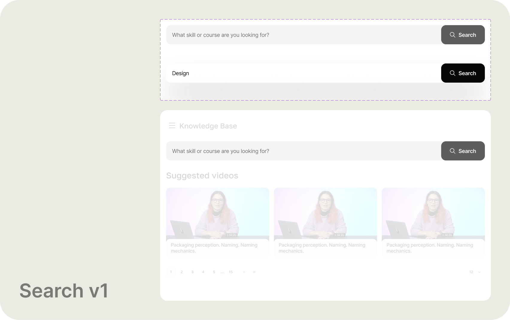
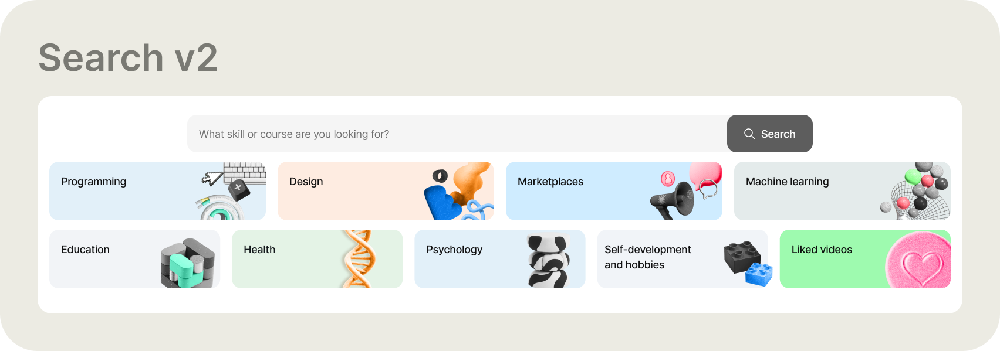
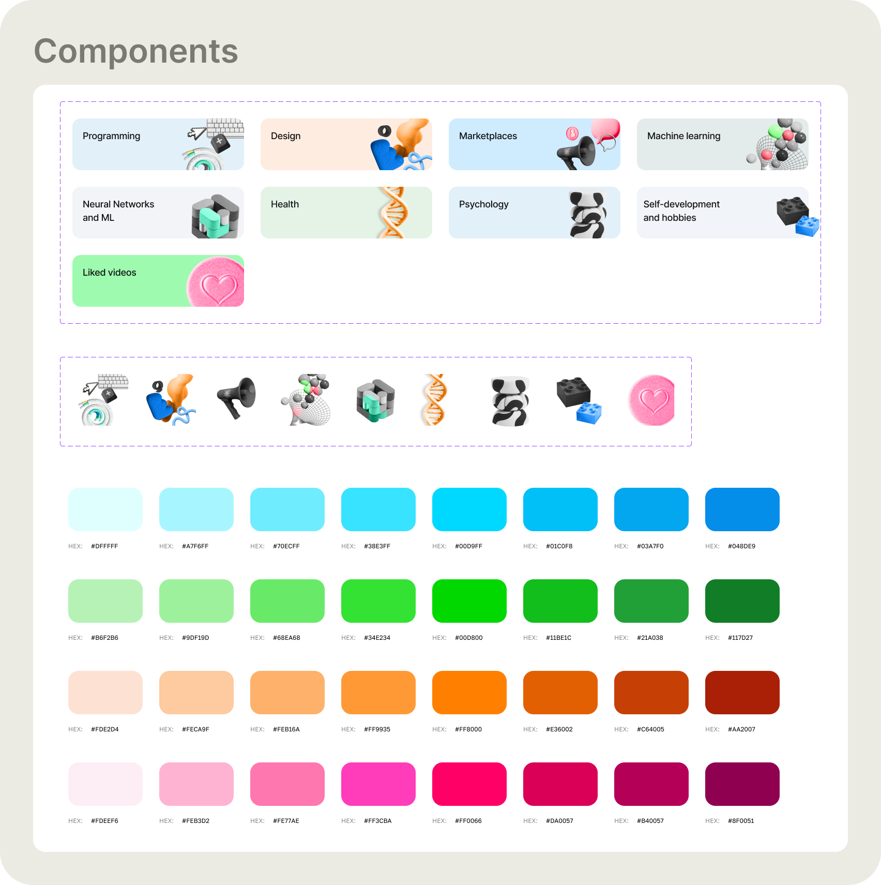
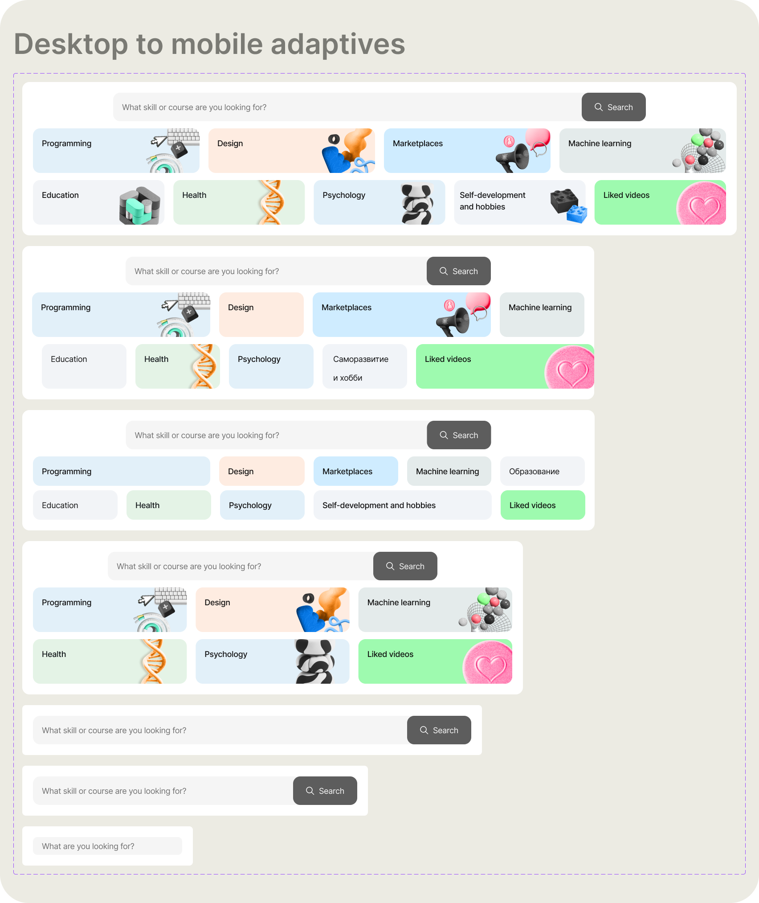
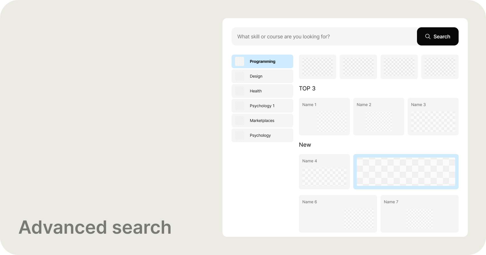

Role and overall result
Product Designer — embedded in subscription product team. Full discovery-to-delivery across three sequential design phases shipped over 18 months.
+42%
users finding search without any help
+32%
satisfaction score in usability testing
3 phases
shipped — Phase 3 live in A/B testing
Search redesign — Netology subscription platform
Tools and methodologies
Figma — all design and prototyping. Discovery through session recordings and search log analysis with the Analytics team. Usability testing: 5 tasks, time-on-task measured before and after each phase. Card sorting to validate category taxonomy before building. Competitive review across Coursera, Udemy, Skillbox, and two further EdTech platforms for Phase 3.
| Problem identified | What the evidence showed | Design response |
|---|---|---|
| Invisible entry point | Session recordings: users scrolled past the search bar repeatedly without registering it — the icon and input had no visual weight | Phase 1 — full-width prominent search field, primary position on page |
| Input too small to trust | The field was sized for a short keyword, not a real query — users weren't typing full thoughts into it | Phase 1 — large single input with a clearly labelled Search button |
| Zero feedback on action | No loading state, no confirmation, no error. Users had no signal that search had done anything at all | Phase 1 — explicit loading, results-found, and no-results states |
| Broad queries, low confidence | Analytics: most queries were category-level terms. Users weren't being specific because they didn't trust the system to handle it | Phase 2 — visual category shortcuts that replace typing for the most common intent |
Research synthesis — four problems confirmed before any screen work began
- Search wasn't broken — it was invisible. Users who eventually found it still didn't engage because nothing confirmed it had worked
- A significant share of queries returned zero results — not because the content wasn't there, but because the backend didn't handle broad category-level terms
- Most users weren't looking for a specific course title. They were browsing by topic. The search model assumed precision; user intent was exploratory
- Low engagement wasn't a content problem. It was a trust problem — users had already decided search wouldn't work before they tried it

The original state. The search input sat in the top-right corner of the page — low contrast, undersized, and easy to miss while scanning content. No loading state, no feedback. Users who tried it once and got silence rarely came back to it.
Phase 1 — Make it visible
The constraint was explicit: don't change how search works. No backend engineering time. Just make the entry point impossible to miss, and give users clear confirmation that something happened when they used it.

Phase 1 — the redesigned search bar. Top row: component states — empty (placeholder) and active with a live query. Below: the field placed in context on the Knowledge Base page. One large input, a clearly labelled button, and three explicit feedback states: loading, results found, no results found.
What changed and why
The search bar moved from a corner detail to the primary action on the page. Size and placement communicate what an input can handle — a small field signals small queries. Making it large was a signal: this is how you navigate here. The feedback states were the real change. For the first time, clicking Search did something visible. Usability testing after shipping: 42% more users found the field without guidance. Five tasks, time-on-task measured before and after. Almost half the people the platform wasn't working for before could suddenly use it.
Phase 2 — Meet users where they are
Analytics after Phase 1 confirmed the pattern: most searches were category-level. Design. Marketing. Programming. Users knew the area, not the title. So instead of asking them to type the same broad terms every session, we gave them one-tap shortcuts — visual category widgets placed above the search input.

Phase 2 — category widgets above the search input. Each widget is a one-tap shortcut to the most-searched content areas, ranked by actual query frequency from the Analytics team. A card sorting session with users validated the taxonomy before we built anything — the labels and groupings came from how users think, not how the platform had organized content internally.

Component breakdown — the full widget set with icon library and colour system. Each category has a distinct colour paired with a 3D icon to support quick scanning. Default, hover, and selected states defined across all variants.

Desktop to mobile — the widget grid across five viewport widths. The layout collapses from a two-row grid on wide desktop down to a compact single-column list on the smallest screens, preserving scannability at every breakpoint.
What changed and why
For most users, the fastest path to content is not typing — it's recognizing. Visual widgets reduced the friction of that first step to a single tap. Card sorting ran before design began to make sure the categories matched user mental models. After shipping, satisfaction in testing rose 32%. We then waited three months before moving to Phase 3. That was intentional — users needed time to build a new habit around the new experience, and we needed enough behavioral data to make good decisions for what came next.
Phase 3 — Search as the main feature
By the time Phase 3 began, the context had shifted. People navigate everything through search now — chat interfaces, search bars, command palettes. A competitive review across Coursera, Udemy, Skillbox, and two more platforms surfaced the new standard. We designed to meet it.

Phase 3 — advanced search. The full-panel experience opens with a persistent category sidebar and a content grid that populates on category selection — Top 3 and New sections surfaced without the user needing to type a single character. Personalized suggestions based on watch history appear before any input. Search stops being a destination and becomes a navigation layer.
What I took away
This looked like a UI problem at the start. It was a trust problem. Users had already decided search wouldn't work — and the experience gave them no reason to think otherwise. Fixing visibility got people in the door. Fixing the feedback loop made them stay.
← Portfolio